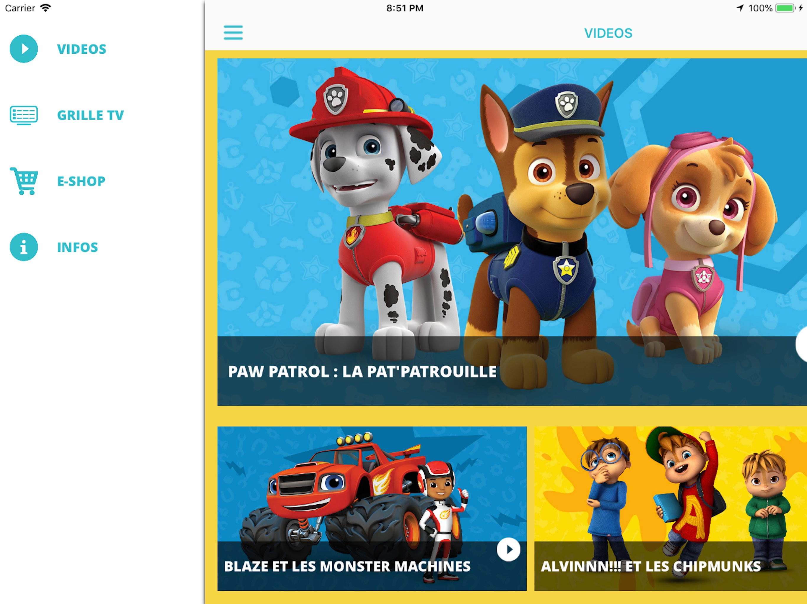
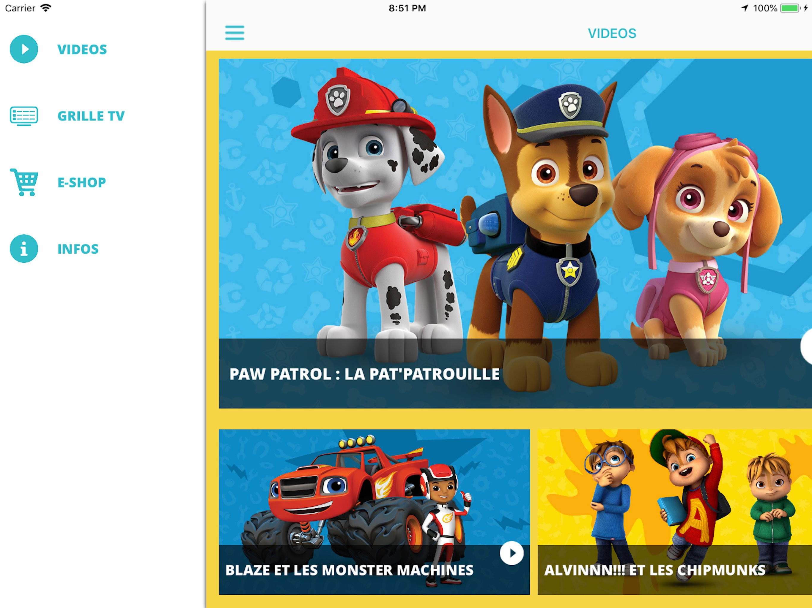

Projects Overview
These apps, all developed from scratch, shared common UX/UI structures and SDKs. This provided a consistent, user-friendly interface across all platforms. Additionally, I integrated Google Play and App Store payment systems in some apps, enabling users to access premium content such as live streams and VOD. They accomplished all of this by collaborating closely with Viacom's skilled designers, creating distinctive applications on the platform of mobile technology."
BET
The BET Channel LIVE application offered access to a diverse range of U.S. entertainment in France. Users could watch the 100% Black-American Culture channel, featuring series, reality shows, talk shows, TV movies, documentaries, and ceremonies. The app provided exclusive clips, live streaming, program schedules, and popular Hip Hop, Soul, and R&B tracks through RADIO DEEZER BET. Subscription options were available for live channel access.

COMEDY CENTRAL
It was Comedy Central, an app that made TV funnier on smartphones and tablets. Users could enjoy the full range of comedy and entertainment content, including series, movies, talk shows, skits, and American one-man shows. Features included watching exclusive clips, live streaming, replaying aired content, accessing the best series through SVOD, and checking the TV schedule. Subscriptions were available for live channel access and offered various durations and prices.
GAME-ONE
It was GAMEONE, an app that brought the best video content to mobile devices. Users could explore the world of GAMEONE, featuring high-tech, video games, TV series, manga, and news from the internet. The app offered unlimited live streaming of the channel, daily free news and videos about video games, and a TV schedule to keep track of favorite programs. Subscriptions were available for channel access with different durations and prices.
J-ONE
It was J-ONE, the only HD TV channel dedicated to Japanese and Asian culture. Users could immerse themselves in the world of J-ONE through the smartphone and tablet app. The channel featured the latest news on manga, music, cosplay, technology, geek gadgets, Asian pop culture trends, and essential events. Users could also enjoy exclusive shows, talks, reports, Japanese game shows, J-POP and K-POP music, Asian films, series, and trailers. The TV guide ensured they didn't miss the best programs. J-ONE and DEEZER collaborated to offer the best J-Pop tracks.
MTV
It was MTV, an app that allowed users to engage in live conversations about MTV programs through Facebook and Twitter. Users could explore the world of MTV and MTV HITS on their smartphones and tablets. The app provided access to the latest videos from MTV programs, celebrity news, music updates, and curated playlists through DEEZER - MTV HITS, which included four thematic radios: ELECTRO, ROCK, POP, and HIP-HOP. The TV guide ensured users didn't miss any shows on MTV.
PARAMOUNT CHANNEL
It was PARAMOUNT CHANNEL, an app that allowed users to download and subscribe to the TV channel. The app offered unlimited access to the channel's live content, featuring the greatest American films from the 1930s to the 2000s. Users could explore the TV guide, watch free videos from the channel's magazines, listen to podcasts, and subscribe to watch PARAMOUNT CHANNEL live. Various subscription options were available, and users could manage their subscriptions within the app.

NICKELODEON
It was Nickelodeon, a free app for smartphones and tablets that offered daily clips from popular cartoons like "The Loud House," "SpongeBob SquarePants," and "Teenage Mutant Ninja Turtles." Users could also access the TV schedule and listen to their favorite tracks on DEEZER - Nickelodeon Teen Radio. Nickelodeon advised users to check with their operator to avoid excessive charges.
NICKELODEON JUNIOR
It was Nickelodeon JUNIOR, an app that allowed kids aged 3-7 to engage with their favorite heroes from the channel. With the app, children could "play, learn, and laugh!" alongside beloved characters like Paw Patrol, Blaze and the Monster Machines, Bubble Guppies, and Dora the Explorer. The app offered daily new videos from the best Nickelodeon JUNIOR programs. Parents could also access the TV guide to ensure their child didn't miss any shows.
 

Even though these applications are no longer available on popular app stores, their influence continues to exist through different alternative platforms.